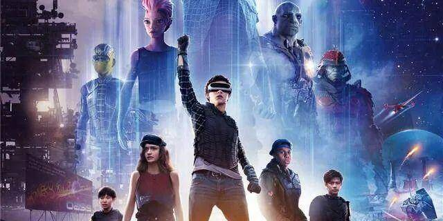
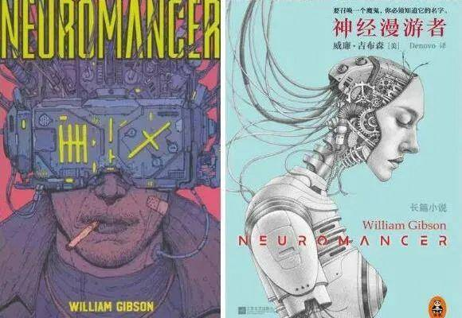
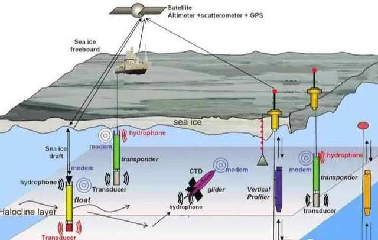
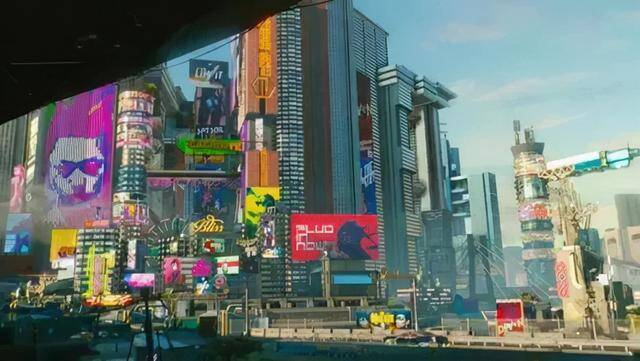

Metaverse和“绿洲”都是赛博空间，元宇宙会加速赛博朋克到来吗?
元宇宙只是赛博空间的代称，似乎一切都在朝着赛博朋克方向发展
存在三十多年的赛博空间画皮元宇宙，未来社会赛博朋克板上钉钉
元宇宙(Metaverse)一词，公认出自尼尔·斯蒂芬森1992年的科幻小说《雪崩》。
《雪崩》筹划了许多年，也没能拍成电影。所以在描述《雪崩》中的元宇宙时，大家会用电影《头号玩家》中“绿洲”的场景打比方。

电影《头号玩家》改编自小说《玩家1号》，与《雪崩》一样，都是非常有名的赛博朋克小说。
《雪崩》中的虚拟现实空间Metaverse，并非尼尔·斯蒂芬森首创，它只是遵循了赛博朋克小说的架构设定。在赛博朋克类型的作品中，多会存在一个现实与虚拟相融合的虚拟空间，剧情则会在虚拟与现实的来回穿插中展开。
不管是《雪崩》中的Metaverse，还是《头号玩家》中的“绿洲”，这些用于承载故事主要剧情的虚拟空间都有一个共同的名字，那就是赛博空间(Cyberspace)。
在很多人眼中，赛博空间只是科幻作品的产物。事实上，随着信息与通讯技术的高速发展，赛博空间早已存在于现实之中。尤其是最近十年，AR/VR、社交媒体、智能手机和物联网等技术，已将我们推向更深入的新虚拟世界和共享数字空间，现实与虚拟之间的界限越来越模糊。

虚实融合，进一步加速了赛博空间的迭代。它随着科技的广泛应用而越发壮大，并且得到学界、商界、军事等诸多领域的广泛认同。在Roblox将其写入招股书之前，赛博空间是Cyberspace。但是现在，Metaverse已成赛博空间的代称。
随着全球科技公司全力推动元宇宙，赛博空间必将快速发展与壮大。元宇宙的快速成形，必然会加快人类迁移进入赛博空间的步伐。很多人担心的问题也就随之而来：元宇宙与赛博空间有什么关系？元宇宙会不会导致赛博朋克社会出现？元宇宙的快速发展会不会加速赛博朋克社会的到来?
从赛博空间说起
虽然Roblox将Metaverse写入招股书并顺利上市而令元宇宙大火，但赛博空间却不是由《雪崩》定义的。早在1982年，科幻小说作家威廉·吉布森就已在其短篇小说《全息玫瑰碎片》中首创了赛博空间，这个概念在其后来的小说《神经漫游者》得到普及。

此后，只要是赛博朋克类的小说，可能没有药物、生化等元素，但必然离不开赛博空间。
空间是哲学和计算机领域中的一个抽象概念，指的是以计算机、现代通讯网络、虚拟现实等信息技术的综合运用为基础，以知识和信息为内容的用于知识交流的虚拟空间。就如元宇宙Metaverse是由meta和universe两个词的组合，Cyberspace一词是控制论(cybernetics)和空间(space)两个词的组合。
在文学作品的赛博空间中，人们可以隐藏在虚假身份后面，可以在其中做任何影响真实世界的事情。
赛博在现实中，这个词则在上世纪90年代开始流行。它被技术战略家、安全专业人士、政府、军事和行业领导者以及企业家用来描述全球技术环境的领域，通常被定义为代表相互依存的信息技术基础设施的全球网络，电信网络和计算机处理系统。
1990年以后，互联网、网络和数字通信的使用都急剧增长，赛博空间则能够代表人们许多新的想法和出现的现象。
现在，赛博空间已经成为描述广泛互联的数字技术的概念，成为描述与Internet和多样化的Internet 文化相关的任何事物的常规手段。比如一些研究数字经济的专家与学者，就经常在他们的数字化转型方法论中提到赛博空间。
赛博空间的发展
对于赛博空间而言，安全是重中之重。要解决网络安全问题，就要做到网络可信任。赛博空间的理想是构建全球互信的基础设施，从技术上讲是用分布式的程序和算法来代替对可信第三方的依赖。
赛博空间信任体系以技术信任为基础，区块链技术自然也会因元宇宙而再度火爆。当然，即便没有元宇宙这个概念，区块链技术也会成为赛博空间持续发展的技术基础。
从1953年至今，随着技术的高速发展，基于技术信任的赛博空间也快速迭代了几个版本。从Cyber1.0时代到Cyber3.0时代，标志年份分别是SSL推出的1995年，比特币诞生的2009 年，以零知识证明技术应用于区块链的2016年。

现在，全球区块链、物联网、云计算、大数据、人工智能、VR等新兴技术的快速融合发展，元宇宙、虚拟世界、数字世界等概念也预示着新一轮的技术应用创新革命将出现。理想化的状态是，随着全球信任基础设施建成，到2050年赛博空间也将向4.0时代演进。
我们还可以换个角度，从军事领域看赛博空间的发展。2006年，美军参联会出台了《电磁空间国家军事战略》，其中赛博空间被定义为通过网络化系统及相关的物理基础设施，利用电子和电磁频谱存储、修改并交换数据的领域。这就是军事领域著名的网络电磁空间，它主要由三部分组成，包括电磁频谱、电子系统、网络化基础设施。

由于军事领域的参与，使得网络电磁空间像陆、海、空、天等其它常规空间一样，成为新的遂行军事行动的战场。现在，世界各大军事强国都已向赛博空间进军。谁能在赛博空间领域更进一步，谁就能在未来战场中占据有利位置。所以，军事上的研究与应用，早已将赛博空间带入现实，并且一直跟着技术突破而持续演进。
所以，赛博空间自从互联网诞生开始就已经存在。而现在的元宇宙，只是让大众对赛博空间有了一定的认知。
元宇宙是怎样的赛博空间?
Metaverse这个词，已在小说《雪崩》中躺了将近30年。因为Roblox将它写入招股书才再次被世人所熟知，并因Facebook等科技巨头的拥戴而彻底火爆。
其实Roblox不用Metaverse这个词，用其他小说中的赛博空间名称，比如直接用《头号玩家》中的“绿洲”也是一样，或者直接就用赛博空间。
只是“绿洲”早已被搬上大荧幕，而赛博空间也早已是一个通用术语，并不能给Roblox带来新意。并且在遍数其他作品，也没有如Metaverse这种预示美好以及更广阔想象空间的词。在这之前，就连Facebook也没有找到像Metaverse这样能够描述其已缔造的虚拟世界的词语，自然要大加利用，已然不惜将公司名改成Meta。
Facebook自2014年收购oculus之后，就持续在VR上投入巨资进行研发。想要让VR/AR在未来代替手机成为人类工作、学习与交互的主流载体，除了解决硬件本身存在的问题，更主要的是有大量的内容。几年来，Facebook在这方面做了很多努力，并已经倾力打造了自己的虚拟现实空间，这个虚拟现实空间如今则用元宇宙来统称。
有了全球各组织与企业的认同与推动，现在元宇宙已经可以与赛博空间划等号。这样来看，元宇宙也早已存在于现实，并且我们每个人都早已参与其中。
想不到吗?我一说你就明白了。我们平时所看的网络上接触到的文字、视频、音频等内容，都是由创作者上传到由网络服务构成的网络空间的。当然，因为XR设备的价格等因素，现在人们连接网络的介质还不是VR/AR这些设备，而是PC、PAD、手机等智能终端。
音乐人 Marshmello 在游戏《堡垒之夜》召开的虚拟音乐会，通过动作捕捉技术以虚拟形象进行实时直播参与与玩家亲密互动。这场演唱会被称为元宇宙的第一次，而参加这场音乐会的玩家通过PC打开《堡垒之夜》，就参与了这场元宇宙演出盛宴。
在Marshmello之后，更多的歌手都在尝试元宇宙的虚拟演出，更多的虚拟偶像也正在各大工作室与MCN中产生。像国产虚拟偶像洛天依、柳夜熙等，我们在抖音、快手等各大视频平台都能看到它们的身影，大家在观看的时候已经在参与元宇宙。
我们看网络小说、看短视频、玩网游以及听歌，其实都是在元宇宙中获取相应的数据。上传作品与观看作品等生产与消费各种数据的行为，则都是与元宇宙的互动。
王吉伟频道认为，广泛意义上可以这样说，凡是在从事基于网络连接的数字化相关业务的人事物，都可以归入元宇宙。凡是能够生产并使用数据，能够参与到数字经济中的人事物，都可以算是元宇宙参与者。
前文讲过，从赛博空间的发展阶段而言，我们正处在Cyber3.0-Cyber4.0之间的赛博空间时代。
不管大家认不认同，赛博空间早已存在于我们身边。我们现在的工作与生活，时时刻刻都要连接赛博空间。并且大家的生存状态越智能，就越离不开赛博空间。只不过现在与赛博空间的连接形式，是人在现实之中使用赛博空间中的数据，并非身处赛博空间之中去创造和使用数据。
但这种“现实肉身”与“数据精神”分离的状态，正随着元宇宙发展而被改变。如果说之前的数字孪生、物联网等技术是将现实中的事和物映射进入赛博空间，元宇宙正在使用更多的技术将人映射进入赛博空间，从而让人们产生更多的沉浸感，并最终让人们在赛博空间中做更多的事情。
赛博空间与现实世界是高度映射与互联的，在赛博空间中做的一切操作都会在现实世界中有所反馈。这样，人类社会的生产、消费等各种行为，都可以在赛博空间中完成。
未来的元宇宙，可能现实中的你只需天天进食、睡觉以保持身体基本机能，一天中会有20小时以上都会在赛博空间中度过。这正是推崇元宇宙企业的愿景，毕竟只有用户高度依赖元宇宙，他们才能在元宇宙中攫取更多的财富。
元宇宙会不会带来赛博朋克?
现在，人们对元宇宙的未来憧憬是无限美好的。
比如Facebook创始人扎克伯格眼中的元宇宙，大家可以做任何想做的事情。用户以全息图的形式被瞬间传送到办公室等虚拟环境，可以与朋友和家人聚在一起、工作、学习、玩耍、购物、创作。用户可以把更多的时间投入到你注重的事情上，减少通勤时间和碳足迹。元宇宙中的生产与制造都可以用全息图完成，而无需在工厂里组装。
Meta对元宇宙的定位与认知， 代表了很多组织对元宇宙的期望。在全球各种组织的推动之下，元宇宙必然会以很快的速度成型。
元宇宙的愿景是美好的，但元宇宙极度繁荣之后，必然会对经济、文化、政治、社会、生态乃至文明造成一定的影响与冲击。
凡事皆有两面性，元宇宙对现实带来的影响有正面的，自然也会有负面的。
面对元宇宙有可能对未来造成的影响，很多问题都值得我们去思考。
- 人们长期在元宇宙中生存，会不会对生理及心理造成影响?
- 现在肆虐的黑客会不会也在元宇宙中肆虐?
- 元宇宙会不会让拥有高端技术的企业掌控更多财富?
- 掌控更多财富与技术的财阀会不会深度参与政治?
- 神经义肢技术进一步发展后会不会引来义体热?
- 政客与财阀们会不会以VR、生物芯片等技术对人们进行操控?
- 元宇宙会不会衍生出与主流价值观不相符的亚文化?
- 长期混淆虚拟与现实的生活会不会让人们迷失自我?
……
类似的问题还可以提出很多。
不知道大家有没有发现，这些看起来只能出现在小说与电影之中的问题，按照现当前技术与商业发展趋势，可能很快会发生在元宇宙之中。
在王吉伟频道看来，元宇宙的本质是赛博空间，而赛博空间则是赛博朋克社会的基础构成。上面所提的多个问题中，任何一条在将来都有可能破坏掉元宇宙的完美设想。并且这些问题一旦出现，便很有可能快速走向反面，继而将社会发展进一步引向赛博朋克。
如有可能出现的用户操控甚至是控制的问题，就涉及到了“控制论”，而控制论与电脑生化正是赛博朋克的元素之一。在这方面，谈及“控制论”为时尚早，但已经有Facebook前员工爆料，元宇宙中会获取更多个人信息，并再度成为网络垄断者。
再如元宇宙可能会让掌控高端技术的企业进化成为超级财阀，从而进一步加速贫富两极分化，财阀们更会深度参与政治进而掌控整个社会，而大型企业、先进与落后的反差、科技顶尖等元素，也是赛博朋克的几大元素。在这个问题上，爆料内容同时也有反映，是想通过虚拟世界来逃避商业垄断与内容监管。
似乎类似的问题，总能找到相关的说法与观点来支撑。而更多赛博朋克关联因素的相关问题，也会在元宇宙的相关内容中被提及。归根结底，反对元宇宙的人是在担心未来社会会朝着负面的赛博朋克方向发展。
赛博朋克作品中的元素很多，包括赛博空间、黑客、虚拟现实、人工智能、控制论与电脑生化、都市扩张与贫民窟、大型企业、基因工程、毒品和生化恐怖主义、霓虹灯立体城市、红蓝色调、反差(先进与落后并存)、科技顶尖、生物学发达(义肢)等。
不客气的说，从技术、人文、经济、政治等因素来看，这些元素都有可能在未来元宇宙繁荣的时代同步出现。
而元宇宙的出现以及很多现象表明，未来社会大概率会朝着赛博朋克的方向发展。
后记：元宇宙加速赛博朋克到来
赛博朋克(英文：Cyberpunk)是“控制论、神经机械学”与“朋克”的结合词，其该背景大多描绘在未来，建立于“低端生活与高等科技结合”的基础上，拥有先进科学技术，再以一定程度崩坏的社会结构做对比。
赛博朋克的故事框架，通常是社会秩序受到政府或财团或秘密组织的高度控制。故事情节通常以人工智能、黑客和巨型企业有关的冲突为主轴，场景倾向设在地球上不远的未来。
在赛博朋克世界中，技术滥用会给人类社会带来黑暗，高科技时代光环之下普通人却苟活着，甚至难以逃脱被掌控的命运。计算机和信息技术科技发展到了极高水平，人与机械的界限开始消失，社会高度秩序化或者混乱不堪。
赛博空间因互联网而生，现在发展到元宇宙阶段，更多先进技术它正将它推向Cyber4.0。虽然大家还无法直接感受赛博空间，但伴随着赛博空间的发展，现实中的很多地方已然有了赛博朋克的苗头。
技术泛滥问题已经深度影响人们的工作与生活，外卖小哥等新型数字劳工迷失在算法中的，短视频等内容平台通过流量算法引导创作者，屡禁不止的暗网交易与网络黑帮，AI技术滥用于各种武器在战场杀人等等。技术滥用、“高科技低生活”的社会状态正在形成，很多迹象都在表明赛博朋克式样的社会正在到来。
从眼下元宇宙的全球火爆程度来看，除了各大组织、企业通过资本、技术加码元宇宙，各国对元宇宙都是持欢迎态度的。比如韩国政府在今年5月就成立了元宇宙联盟，最近韩国首尔又宣布成为首个加入元宇宙的城市。
虽然赛博朋克作品背景城市多以东京、香港为主，但近几年韩国却被认为是最有可能率先进入赛博朋克时代的国家。

事实上，从2000年开始伴随着互联网的发展，人类就开始了从物理空间向网络空间的“迁移”。只不过，元宇宙是将迁移到网络空间的人们具象化。王吉伟频道认为，在元宇宙之前，各种数字化技术在做的都是将静态非生命物体映射进入赛博空间。而现在元宇宙存在的目的，则是将包括人类在内的生命体拉进赛博空间。
元宇宙将人类这一社会主体拉入虚拟空间，并且发挥浑身解数让人们沉浸于此，使得人类生产与生活在虚拟空间中进行，也会让社会运行进一步向赛博空间靠拢。
由此，元宇宙的发展壮大，必然会加速赛博朋克社会的到来。
元宇宙要缔造有史以来最有沉浸感的虚拟空间，最终让所有人在里面做所有事。沉浸这个词在产品体验上是好的，但在精神意识上却经常会与沉迷划上等号。就像沉迷于游戏、沉迷于赌博等一样，沉迷于任何事情都不会有好的结果。
未来元宇宙的繁荣会让所有人沉浸其中，必然会造成人们对它的长期依赖，而现实世界又会变成什么样呢？相信《头号玩家》中的现实场景的破败不堪，已经给很多人留下了深刻的印象。
当然，只要能够平衡与解决尖锐的社会矛盾，以后的赛博朋克不一定的坏的，或许就会是乌托邦一样的存在。但若矛盾进一步激化，导致各种社会问题频出，元宇宙所带来的赛博朋克则必会崩坏。
那个时候，可能就会真的成为一种反乌托邦式的赛博朋克社会了。